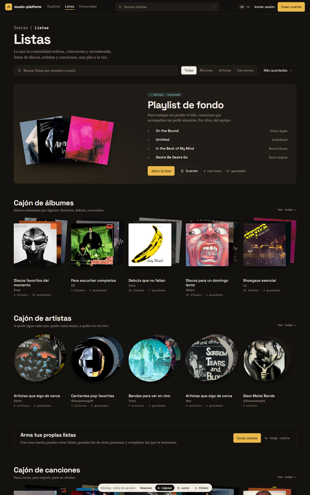

A · Cajones
Una disquería: la destacada como exhibidor, con sus fundas en abanico y sus primeras canciones, y debajo un cajón por tipo (álbumes, artistas, canciones) donde cada lista es una pila de fundas de pie.
A favor
- La identidad más fuerte; cada lista tiene cuerpo.
- El tipo, que es lo que distingue una lista de otra, ordena la página.
- El teléfono se recorre deslizando, como en Explorar.
En contra
- Popular y reciente quedan escondidos dentro de cada cajón.
- Tres filas desplazables esconden listas a la derecha.
- Sigue sin mostrar qué hay dentro de cada lista.